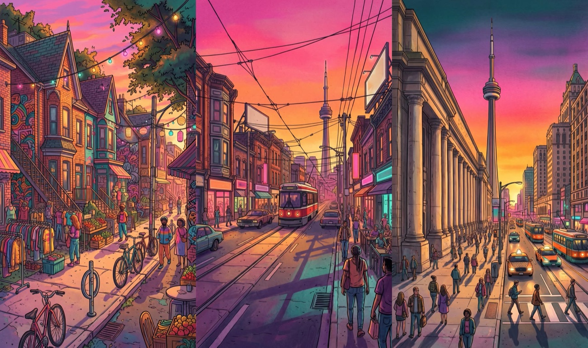
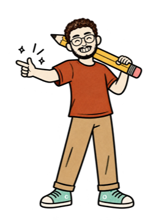
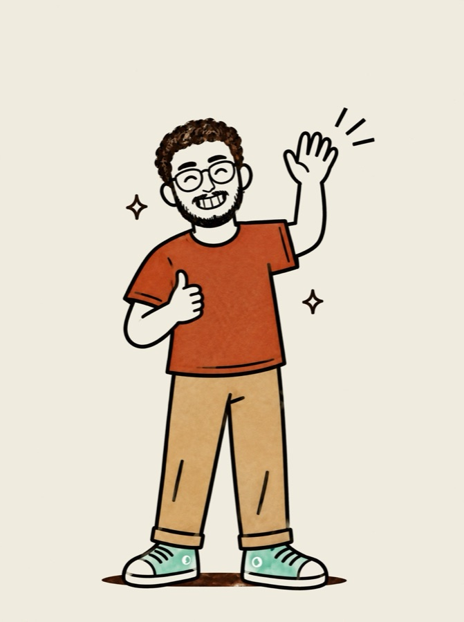

@theabhaychopra
@theabhaychopraToronto as an open-world game map
Everyone was comparing the size of the GTA 6 map, so I made my own city into one. One prompt in Google Flow gave me a painted fold-out map of Toronto: every district in its own colour, the CN Tower in the middle. Then I asked for three real corners at street level, in the same painted look.

The map prompt

Fill in the blanks for your city. Write the district names yourself, in capitals. The model spells names right when you give them, and makes up streets when you don't.
A hand-painted fold-out paper map of [YOUR CITY] drawn as an original open-world video game map, seen from above at a slight tilt, lying unfolded with soft fold creases and worn paper edges. Real [YOUR CITY] geography: [the water, river or park that shapes your city] along the [bottom / side], the downtown grid, [one more real feature], main roads drawn as glowing tracks. Every district is a different saturated neon colour with a big painted name label: [DISTRICT 1], [DISTRICT 2], [DISTRICT 3], [DISTRICT 4], [DISTRICT 5], [DISTRICT 6]. The [YOUR LANDMARK] is painted huge in the centre as the landmark you see from everywhere, casting a long shadow. Tiny painted icons for parks, [a ferry / a bridge / a stadium]. A legend box in the bottom corner with coloured icons and a compass rose. Airbrushed 1980s sunset palette (hot pink, teal, orange, purple), gouache texture, crisp readable lettering. Original design: no logos, no game titles, no brand names, no real game map. Vertical 9:16.
The street-level prompt
Attach the map you just made, then send this. The map is only there for the style, so all six streets come out in the same paint, colours and outlines.
Use the attached painted [YOUR CITY] game map ONLY as the style reference (same airbrushed 1980s sunset palette of hot pink, teal, orange and purple, same gouache texture and bold ink outlines). Make 6 images, vertical 9:16: 2 images for each of these three real [YOUR CITY] street corners, painted at street level, eye height, as if the player just landed there in an original open-world video game. 1) [CORNER 1]: [what is really there: the buildings, shops, signs of life]. 2) [CORNER 2]: [what is really there]. 3) [CORNER 3]: [what is really there, plus the landmark behind it if you can see it]. Golden hour, long shadows, a little neon glow. Keep each place recognisable from its real architecture. No logos, no shop names, no game titles, no text, no letters anywhere.
Step by step
Open a project
Go to Google Flow, start a new project and use the prompt box at the bottom. Nano Banana makes images; ask for vertical 9:16 in the prompt.
Make the map
Paste prompt 1 with your city filled in. Ask for 2 images and keep the one with the cleanest lettering.
Attach it
Press + in the prompt box and pick your map, so it rides along as the style reference.
Make the streets
Paste prompt 2 with your three corners. Describe what is really there: the shop fronts, the tram, the station columns. That's what makes it look like your street.
Download big
Open each image and download the 2K upscale. 1K looks soft on a phone.
What made it work
- Real geography in the first lines. The lake, the river, the grid: that's what makes it read as your city and not a made-up one.
- One landmark, huge. Name it and say "painted huge in the centre". It anchors the whole map.
- Ban the text on the streets. "No text, no letters anywhere" stops fake shop signs with gibberish words.
- Keep it original. Don't ask for a real game's map, logo or title font. Your own city in your own look is the fun part.
- Put your real photo next to it. Shoot the same corner from the pavement. The side-by-side is what people stop for.

Your city, your map
Every city has its own landmark, its own water and its own corners. That's what makes the map yours.